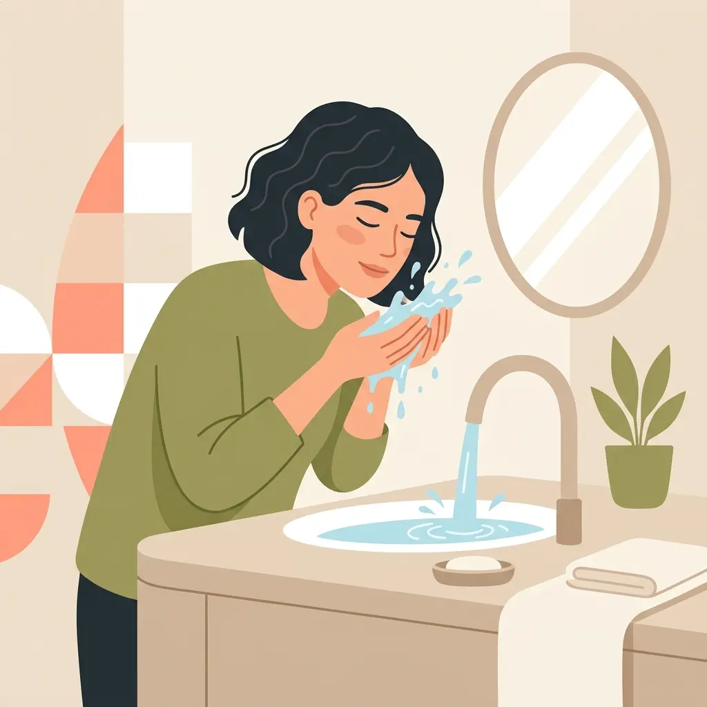

Por que a compulsão alimentar não se resolve com força de vontade?
Durante um episódio iminente de compulsão, muitas pessoas acreditam que a falha em controlar o impulso se deve à falta de "força de vontade". A ciência da neurobiologia mostra um cenário bastante diferente.
A compulsão alimentar está diretamente conectada ao circuito de recompensa do nosso cérebro. Alimentos palatáveis (frequentemente com açúcar ou gordura) provocam uma liberação intensa de dopamina, o neurotransmissor do desejo e da antecipação. Em um cérebro condicionado pelo comer emocional ou pelas restrições frequentes de dieta, até mesmo uma sugestão (ver um alimento, sentir um cheiro, ou passar por uma emoção desconfortável) gera um forte pico de dopamina no *striatum* cerebral.
Essa inundação química diz ao cérebro: "Você precisa agir e consumir isso agora para sobreviver". Nesse estado de alerta máximo, ocorre a inibição ou enfraquecimento do córtex pré-frontal — a região responsável por nossas decisões lógicas e freios inibitórios. Superar essa tempestade de neurotransmissores apenas com "raciocínio lógico" ou força de vontade mental é extremamente difícil e frequentemente ineficaz no curto prazo.
O que é Tolerância ao Mal-Estar?
A Dra. Marsha Linehan, criadora da Terapia Comportamental Dialética (DBT), cunhou um conceito valioso: a Tolerância ao Mal-Estar. Este pilar aborda a nossa capacidade de sobreviver e passar por crises emocionais extremas sem piorar as coisas.
O foco das habilidades de tolerância ao mal-estar não é resolver a origem do problema que causou a ansiedade ou o sofrimento, mas sim trazer o corpo de volta para um nível aceitável de regulação, onde você consiga voltar a usar a parte racional e sábia do seu cérebro. Quando as emoções batem o pico (escala 10), tentar refletir não funciona; precisamos agir quimicamente no corpo para baixar essa intensidade. É exatamente para isso que servem as Habilidades TIP.
As 4 Habilidades TIP da DBT
As Habilidades TIP atuam no sistema parassimpático do corpo, "puxando o freio de mão" da crise. Elas devem ser aplicadas no momento em que você percebe o impulso do comer exagerado incontrolável chegando.
1. Temperatura (Água fria ou gelo)
A temperatura afeta quase que imediatamente a nossa neurobiologia porque aciona uma resposta fisiológica primária: o reflexo de mergulho mamífero (mammalian dive reflex), forçando o coração a desacelerar instantaneamente e induzindo calma orgânica.
- Como fazer: Trancando a respiração, mergulhe o rosto (especialmente olhos e bochechas) em uma bacia com água bem fria por 30 a 60 segundos.
- Alternativa: Segure uma pedra de gelo na palma da mão, passe o gelo na nuca ou ao redor dos olhos e das maçãs do rosto. Mantenha o gelo na pele por cerca de 30 segundos em cada local, tolerando o desconforto frio que substitui e desfoca a dor emocional.
2. Intensidade (Exercício Intenso)
Emoções de raiva extremas ou ansiedade sufocante enchem os músculos de energia ("luta ou fuga"). A habilidade da Intensidade serve para queimar rapidamente a química do estresse que se acumulou no corpo, acalmando o sistema em seguida através do cansaço físico.
- Como fazer: Pratique de 5 a 10 minutos de esforço físico abrupto e intenso, como correr sem sair do lugar, polichinelos acelerados, agachar e pular, ou subir e descer escadas rapidamente até sentir forte exaustão.
3. Pausa Respiratória (Respiração Ritmada)
Respirar de maneira descontrolada retroalimenta a mensagem de pânico no cérebro. Voltar ao ritmo ativa o repouso. A expiração sempre precisa ser o dobro do tempo da inspiração para ativar a regulação parassimpática.
- Como fazer: Respire profundamente preenchendo primeiro a barriga e depois o peito. Inspire o ar contando até 4 segundos; segure brevemente; em seguida, exale todo o ar contando até 8 segundos. O alongamento do tempo da exalação é a chave da técnica.
4. Relaxamento Muscular Pareado
A tensão emocional e a tensão muscular andam sempre juntas. É virtualmente impossível sentir um forte pico de ansiedade de comer sem ter os músculos do corpo travados e rígidos. Ensinar o corpo a relaxar a musculatura intencionalmente quebra esse ciclo fechado de tensão.
- Como fazer: Inspirando profundamente, contraia todos os músculos do seu corpo com muita força (ou tensione agrupamentos: cerre os punhos, os ombros e a face). Segure a tensão notando o desconforto. Expirando pela boca lenta e longamente, solte toda a tensão muscular de uma vez enquanto diz internamente e com firmeza a palavra "relaxe". Note a sensação do corpo "derretendo". Repita quantas vezes for necessário.
Como saber qual habilidade usar (Semáforo das Escolhas Alimentares)
Para simplificar o uso das ferramentas no dia a dia, gosto de ensinar o "Semáforo das Escolhas", que categoriza nossa zona de atenção para aplicar as técnicas corretas no momento da precisão.
- Sinal Verde (Calma/Rotina): Aqui entra o Comer Intuitivo, o planejamento alimentar nutritivo, o Mindfulness leve da mastigação e as refeições ricas em nutrientes que ancoram a saúde diária.
- Sinal Amarelo (Estresse em aumento): Você começa a notar que as emoções estão ditando a escolha alimentar, buscando compensação. Aqui você percebe o comer emocional. Habilidades funcionais aqui incluem parar para respirar, observar o pensamento e questionar a fome física vs fome emocional, abrindo espaço antes de ceder ao impulso.
- Sinal Vermelho (Crise Iminente): O impulso de compulsão já sequestrou o controle (ansiedade máxima, desconexão emocional pesada). Aqui é o momento em que a reflexão não funciona mais. Você desliga o piloto automático e aplica urgentemente as Habilidades TIP (como a técnica do gelo).
Em suma: se a crise alimentar apresentar força intensa incontrolável, a habilidade somática é sempre a via mais rápida de socorro.
Você não precisa enfrentar isso sozinha
Compreender suas emoções e tratar o comportamento compulsivo exige acolhimento estruturado. Agende sua avaliação para receber apoio profissional e trilharmos um caminho saudável.
Falar com a Nutricionista LetíciaEmbasamento Clínico e Científico
O conteúdo neurobiológico e comportamental descrito tem raiz nas referências e manuais terapêuticos abaixo:
- Linehan, Marsha M. (2018). Treinamento de habilidades em DBT: manual de terapia comportamental dialética para o paciente. (Tradução: Daniel Bueno; revisão técnica: Vinícius Guimarães Dornelles). 2ª ed. Porto Alegre: Artmed.
- Davidson TL, Jarrard LE. (1993). A role for hippocampus in the utilization of hunger signals. Behav Neural Biol, 59(2):167-71.
- Rozin P, Ashmore M, Markwith M. (1996). Lay American conceptions of nutrition: dose insensitivity, categorical thinking, contagion, and the monotonic mind. Health Psychol. 15:438-47.
- Literatura de neurociência do comportamento sobre o sistema dopaminérgico ("Striatum") em processos de busca e recompensa frente a estímulos condicionados de estresse.
Perguntas Frequentes
As Habilidades TIP substituem terapia?
Não. As habilidades TIP são ferramentas de 'primeiros socorros emocionais' para interromper crises agudas de desregulação, mas não tratam a causa raiz da compulsão. O acompanhamento contínuo com nutricionista comportamental e psicólogo é essencial para a recuperação a longo prazo.
Posso usar as habilidades TIP sozinha em casa?
Sim. As habilidades TIP foram desenhadas exatamente para que você possa usá-las sozinha no momento em que sentir o impulso da compulsão alimentar aumentar rapidamente, ajudando a baixar a intensidade fisiológica do corpo e recuperar o controle de maneira segura.
Quanto tempo leva para sentir efeito do gelo (Temperatura)?
O efeito da habilidade Temperatura (como segurar gelo ou usar água fria no rosto) ocorre em menos de um minuto, com tempo de contato recomendado de cerca de 30 a 60 segundos, estimulando rapidamente o sistema nervoso parassimpático e promovendo alívio agudo do estresse.
O que fazer quando nenhuma habilidade parece funcionar?
Se a crise for incontrolável mesmo após o uso das habilidades somáticas, busque um local seguro, tente o máximo de autocompaixão e acolhimento possível e não se culpe pelo evento. Transtornos alimentares requerem cuidado especializado prolongado. Em episódios persistentes e exaustivos, reporte imediatamente a situação para a sua rede de apoio e para o seu terapeuta responsável.
Força de vontade é suficiente para parar a compulsão?
Não. A ciência e a neurobiologia demonstram que o forte desejo compulsivo inunda o cérebro com o neurotransmissor dopamina, desativando o raciocínio lógico no córtex pré-frontal e amplificando a ansiedade. O impulso biológico se torna esmagadoramente mais forte do que a força de vontade temporária. Por isso, usamos habilidades físicas e somáticas (como as da DBT) para "resetar" o sistema nervoso de forma efetiva e sem julgamento moral.